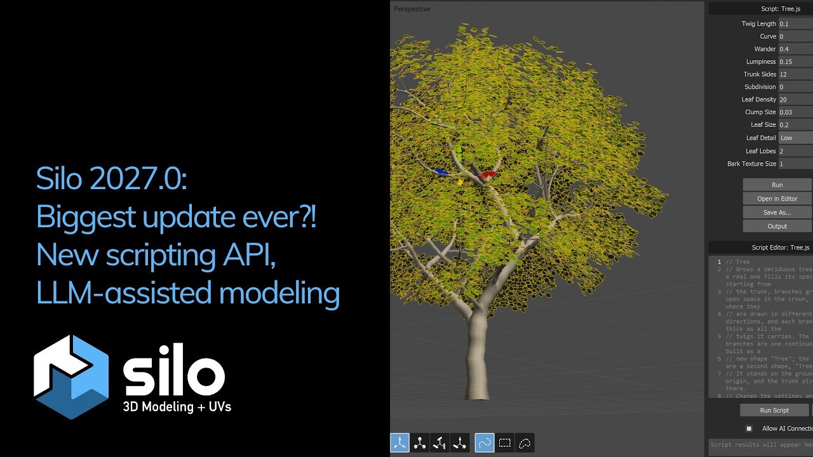

Silo 2027.0 加入腳本編輯器與 MCP，開放以 JavaScript 自動化建模
Nevercenter 的 Silo 2027.0 新增 JavaScript 腳本 API、內建編輯器與 MCP 伺服器，可建立自訂工具或連接外部 AI 工具；此次也改善橋接操作、glTF 材質及部分檔案往返。

製作流程 ★★★★☆
完整分析
腳本可帶自己的操作介面
新的 API 包含超過一百個函式，涵蓋網格、選取、材質、UV 與攝影機。腳本可由內建或外部編輯器撰寫，完成後從選單執行，或使用帶數值欄位與核取方塊的獨立視窗。
自動化與資產交換一同改善
MCP 伺服器讓外部 AI 工具透過這套 JavaScript API 控制 Silo；glTF 匯出則改善 PBR 材質並保留摺痕與內嵌貼圖。這些變更分別對應操作自動化與跨工具資產傳遞。
效能與配套版本須分開理解
報導提到大型模型操作和法線重算加快，但沒有量化速度提升；配套渲染器 Milo 當時仍為 2026.0。不能把 Silo 的版本更新解讀為整套工具同步更新或固定倍數加速。
BRIEF｜來源已驗證；證據深度較有限，完整分析會明確區分已知資訊與待驗證事項。